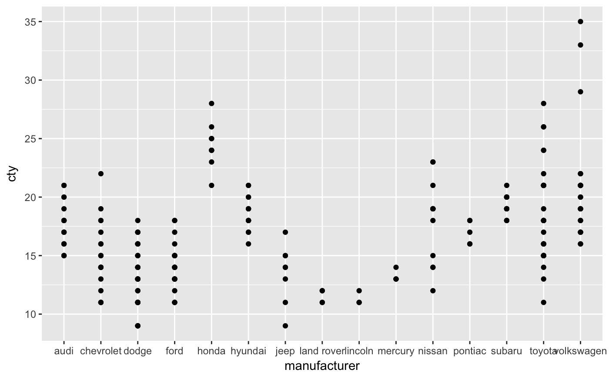

You can use continuous positions even with a discrete position scale - this allows you (e.g.) to place labels between bars in a bar chart. Continuous positions are numeric values starting at one for the first level, and increasing by one for each level (i.e. the labels are placed at integer positions). This is what allows jittering to work.
scale_x_discrete(..., expand = waiver(), position = "bottom") scale_y_discrete(..., expand = waiver(), position = "left")
Arguments
| ... | Arguments passed on to
|
|---|---|
| expand | Vector of range expansion constants used to add some
padding around the data, to ensure that they are placed some distance
away from the axes. Use the convenience function |
| position | The position of the axis. |
See also
Other position scales: scale_x_continuous,
scale_x_date
Examples
# The discrete position scale is added automatically whenever you # have a discrete position. (d <- ggplot(subset(diamonds, carat > 1), aes(cut, clarity)) + geom_jitter())d + scale_x_discrete("Cut")d + scale_x_discrete("Cut", labels = c("Fair" = "F","Good" = "G", "Very Good" = "VG","Perfect" = "P","Ideal" = "I"))# Use limits to adjust the which levels (and in what order) # are displayed d + scale_x_discrete(limits = c("Fair","Ideal"))#> Warning: Removed 11189 rows containing missing values (geom_point).#> Warning: Removed 9610 rows containing missing values (geom_point).#> Warning: Removed 16770 rows containing missing values (geom_point).# See ?reorder to reorder based on the values of another variable ggplot(mpg, aes(manufacturer, cty)) + geom_point()# Use abbreviate as a formatter to reduce long names ggplot(mpg, aes(reorder(manufacturer, displ), cty)) + geom_point() + scale_x_discrete(labels = abbreviate)